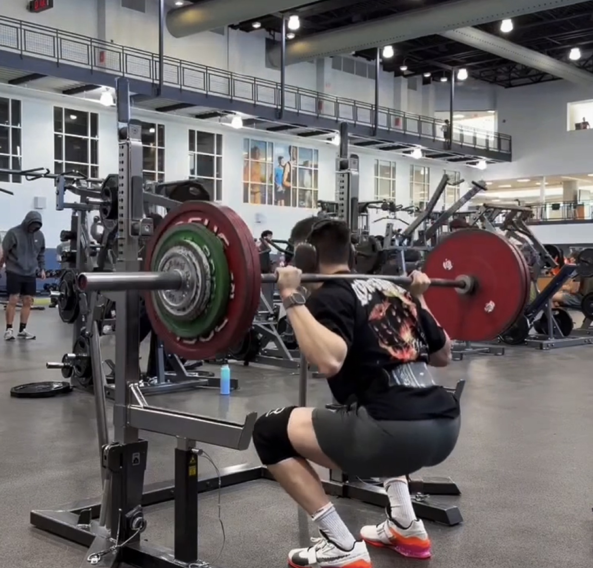
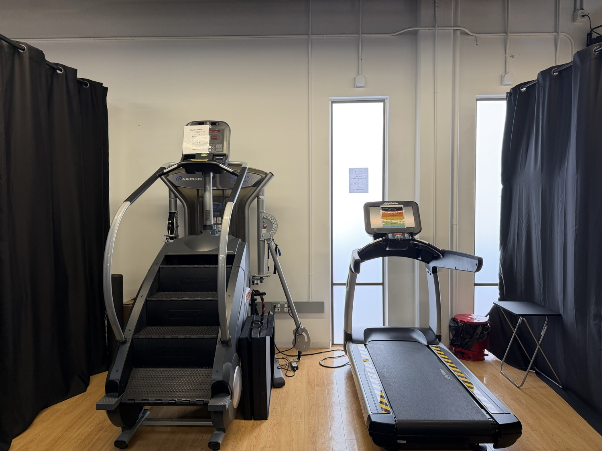
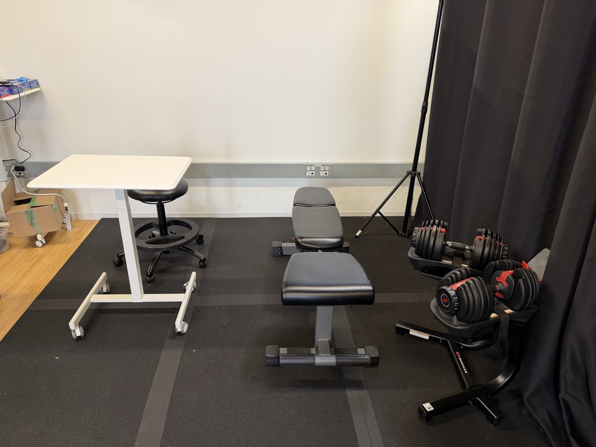
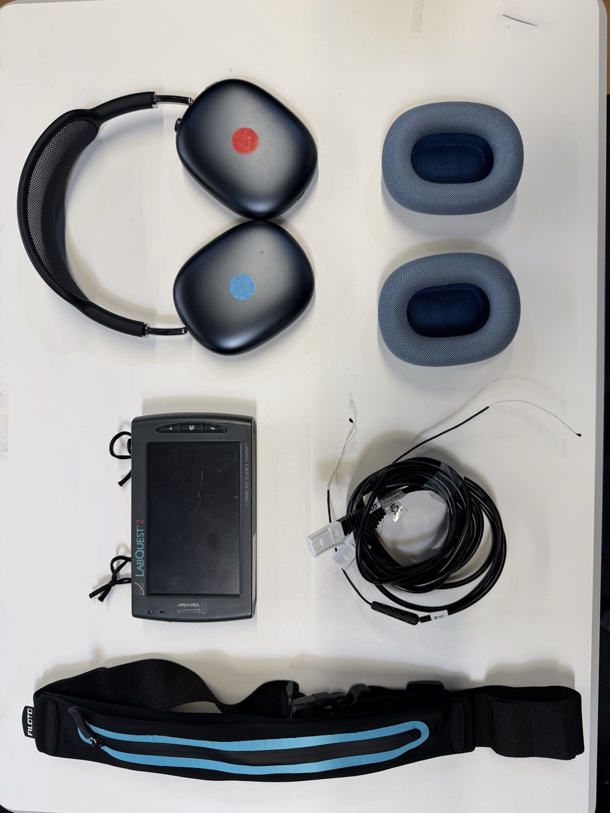
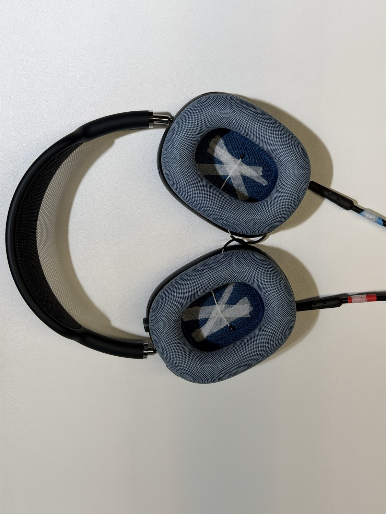

Human Physiology · Internship 2026
A study measuring the thermal comfort, sweat, and fit of over-ear AirPods Max across a full exercise session — pairing continuous ear-cup temperature with participants' own subjective ratings.
This one is personal. I've used AirPods Max for years and love them everywhere — except the gym. They heat up, get sweaty, and slip off when I lift. That everyday frustration is exactly what I turned into this study.

Background
Research Questions & Hypotheses
One structured session per participant; cardio & weight-lifting order is counter-balanced. Hover a phase for detail.
Protocol
Participants
Data Collected
Hardware
Exercise gear
Capture
How a session is run — a screened-off room, standardized equipment, and AirPods Max instrumented with thermocouples.

Stair climberTreadmillBlackout curtains
Logging deskAdjustable benchDumbbells
Waist beltLabQuest 2 loggerThermocouple leadsAirPods Max
ThermocoupleThermocoupleControlled environment — ambient temperature averaged the room baseline of ~73°F (23°C) at 52–59% relative humidity (kept below the ~60% skin-comfort threshold), so every ear-cup rise reflects the device warming, not the room. The AirPods Max themselves weigh 13.6 oz (385 g).
Every step — running the session, cleaning messy sensor logs, visualizing the survey — is a small, offline, local-first tool. Click any card to open it live. Face Blur and the Thermocouple Analyzer also have a Simulated data option (passcode) that loads a demo participant dataset, so you can try them without any real files.
Aligns ear temp to the Tagger timeline — auto sections, cleaning, per-phase stats, compare.
Numbers that came out of the data so far — measured or observed across the sessions (N = 17).
Who we tested — sample so far (N = 17)
Ear-cup temperature (°F): Room BL is ambient (device off); PT BL & Recovery are the value at the end of each 3-min seated hold; Cardio & Weight-lifting are the block peak.
| Participant | Room BL | PT BL | Cardio | Weight-lifting | Recovery |
|---|---|---|---|---|---|
| MD105366 | 71 | 78 | 84 | 83 | 88 |
| MD112502 | 73 | 80 | 86 | 88 | 88 |
| MD146757 | 73 | 79 | 84 | 83 | 85 |
| MD160880 | 73 | 84 | 91 | 90 | 93 |
| MD121815 | 73 | 79 | 87 | 81 | 84 |
| MD153340 | 74 | 80 | 87 | 84 | 89 |
| MD767528 | 74 | 81 | 86 | 89 | 89 |
| MD179539 | 72 | 80 | 89 | 86 | 92 |
| MD736460 | 73 | 80 | 86 | 87 | 86 |
| MD183417 | 71 | 79 | 85 | 82 | 88 |
| MD131671 | 74 | 82 | 89 | 90 | 90 |
| MD136409 | 73 | 81 | 92 | 91 | 90 |
| MD212786 | 73 | 86 | 92 | 90 | 90 |
| MD966187 | 74 | 81 | 88 | 85 | 86 |
| MD820246 | 73 | 82 | 88 | 88 | 85 |
| MD856664 | 71 | 81 | 87 | 86 | 84 |
| MD715544 | 71 | 82 | 88 | 89 | 87 |
It heats fast and stays hot · people reject the trapped sweat more than the degrees · and the fit won't stay put. Pilot data, N = 17.
Donning is the big jump — the ear-cup spikes into the 80s within minutes, then climbs to a ~89°F peak and holds in the high-80s until removed. At ≈31°C that sits at the upper edge of the skin–cushion comfort zone (≈31–33°C, RH <60%), so a full 30–90 min session is spent in a near-uncomfortable microclimate (Y. Li 2001; Fukazawa & Havenith 2009).
Ear-cup heat jumps on donning, then holds in the high-80s until the device comes off.
Nearly all the heat arrives in the first few minutes — then it plateaus.
Felt warmth & sweat rise right along with the measured heat behind them.
Temperature climbs into the high-80s while effort stays at/under RPE 6 — the heat isn’t from working harder.
Prior work That ~88°F (≈31°C) sits at the upper edge of the skin–cushion “microclimate” comfort zone (≈31–33°C, RH <60%), where discomfort is driven more by trapped moisture / skin wettedness than by temperature itself — and the head is among the body’s most heat-sensitive regions. Y. Li, The Science of Clothing Comfort, Textile Progress (2001); Gagge, Stolwijk & Hardy (1967); Fukazawa & Havenith, Eur J Appl Physiol (2009); Arens, Zhang & Huizenga, J Therm Biol (2006).
In their words — thermal discomfort
The failure is stability, not comfort: 10 of 17 had it fall off — almost all on the bench press — as the band slides back and down off the head during supine lifts. Pressure and material comfort stayed fine throughout.
Nearly every adjustment — and every fall — lands in weight-lifting.
Logged adjustments track how unstable the fit felt.
Instability is the real failure — 10 of 17 peaked moderate-or-severe; pressure & material stayed fine.
Shorter hair sat more stably — exploratory, small n.
Prior work Headphone comfort has mostly been studied as clamping pressure & cushioning (Sapiejewski 1990), and head-worn fit depends on head/face form (Bredenkamp 2024); helmet studies show fit quality governs stability & retention under movement (Yu et al. 2018). Over-ear headphone retention during exercise is largely unstudied — the gap this pilot addresses. Sapiejewski, J. Acoust. Soc. Am. (1990); Bredenkamp, in Product Fit & Sizing (2024); Yu et al., J. Biomech. Eng. (2018).
In their words — instability
10 of 17 wouldn’t reuse them for workouts, and rejection concentrates in the people who’d use them most — 6 of the 8 who train ≥5×/week said no. It’s the trapped sweat they reject more than the degrees, and prior AirPods Max experience didn’t change that.
6 of 8 frequent trainers wouldn’t reuse — the people who’d use them most reject them most.
An ongoing pilot — N = 17 of a target N = 20. What limits today's read, where we go next, and the design direction it points to.
Limitations
Weights capped at ~20 lb / RPE ≤ 6 — so the heat & slip here are a lower bound.
N = 17, directional only — and sessions ran ~60 min with temperature still rising at the end, so the true plateau isn't captured.
We log only the ear-cup air temperature — no humidity or skin-contact temp.
A single AirPods Max, one cushion colour, in a fixed indoor lab (no sunlight).
Next steps
Push past 20 lb toward the RPE cap — see if heat & slip scale with effort.
Reach N = 20 and run longer sessions to capture the true plateau / ceiling.
Log humidity and skin-contact temp to find the real driver of discomfort.
Try other cushion colours and run sessions outdoors in sunlight.
Future direction
Mesh vents + moisture-wicking, quick-dry fabric + cooling-gel / phase-change padding & washable covers pull trapped heat & sweat out — with a higher-grip, supine-stable seal so it stays put through bench lying↔upright transitions.
A cushion re-imagined for cooling, airflow & grip — drag to compare with today’s knit.
Tap each upgrade to see what it does
A glowing marker tracks today's position across the project.
Confirm direction; literature & competitor review; define questions.
Study protocol; session checklist; recruit participants; build tools.
Run pilot sessions; align & clean data; cross-link subjective vs. measured.
Final technical report, polished demo & presentation.